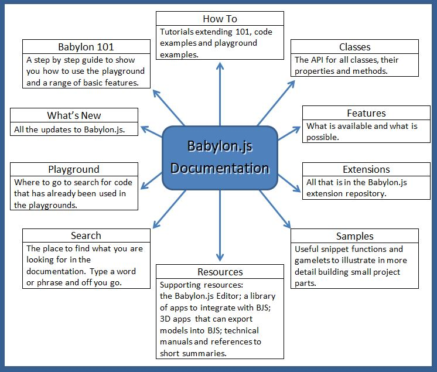

<!DOCTYPE html><html style="height:100%;"><head lang="en"><meta charset="UTF-8"><meta name="viewport" content="width=device-width, initial-scale=1"><meta name="google-site-verification" content="wcRjktXhF6DAjmhneKS7UatweBIkEF6QfqsNhAYbUgg"><title>Babylon.js Documentation</title><link rel="shortcut icon" href="/img/favicon.ico"><meta name="msapplication-TileColor" content="#ffffff"><meta name="theme-color" content="#ffffff"><link rel="stylesheet" href="https://use.typekit.net/cta4xsb.css"><link rel="stylesheet" href="//cdnjs.cloudflare.com/ajax/libs/normalize/3.0.3/normalize.min.css"><link rel="stylesheet" href="/css/libs/slideout.css"><link rel="stylesheet" href="/css/libs/highlight/github.css"><link rel="stylesheet" href="//maxcdn.bootstrapcdn.com/font-awesome/4.3.0/css/font-awesome.min.css"><link rel="stylesheet" href="//cdnjs.cloudflare.com/ajax/libs/jquery.perfect-scrollbar/0.6.3/css/perfect-scrollbar.min.css"><link rel="stylesheet" href="/css/main.css"><link rel="stylesheet" href="//cdnjs.cloudflare.com/ajax/libs/highlight.js/9.10.0/styles/default.min.css"></head><body><nav id="menu"></nav></body></html><nav class="nav-main" style="position:inherit;"><!-- Hamburger menu : displayed only in small screens--><i class="fa fa-bars" id="mobilemenu"></i><div class="banner"><div class="menu"><div class="do-not-hover" id="home"><a href="/">HOME</a></div><div class="item" id="whatsnew"><a href="/whats-new">What's new</a></div><div class="item" id="feature"><a href="/babylon101">Babylon 101      </a></div><div class="item" id="feature"><a href="/examples">Examples                        </a></div><div class="item" id="How_To"><a href="/How_To">How To...</a></div><div class="item" id="feature"><a href="/features">Features</a></div><div class="item" id="resources"><a href="/resources">Resources</a></div><div class="item" id="extensions"><a href="/extensions">Extensions</a></div><div class="item" id="samples"><a href="/snippets">Snippets        </a></div><div class="item" id="classes"><a href="/api">API</a></div><div class="item" id="playground"><a href="/playground">Playground</a></div></div><div class="more"><div class="searchbar"><form method="get" action="/search"><input type="text" name="bjsq" placeholder="Search..."><button type="submit"><i class="fa fa-search"></i></button></form></div></div></div></nav><div id="wrapper"><div class="presentation-header"><div class="presentation-img"></div><div class="bigimage"></div><h1 class="bjs-moto">POWERFUL, BEAUTIFUL, SIMPLE, OPEN, WEB-BASED 3D AT ITS BEST</h1></div><div class="bjs-components"><div class="bjs-component"><h1>Easy to Try and Setup</h1><p>The quickest way to see how to use the engine is to head
to the <a href="/babylon101/first">First Steps</a>.
For your own HTML project nothing needs to be installed on your 
computer and nothing needs to be installed by a client 
to run your program. 
See how simple it is with the <a href="#getting-started">getting started tutorial</a> below.
 
Check out the <a href = "/resources/Documentation_Category_Map">Index</a> or the <a href = "/features">Features Section</a> to see what is available.
Build your first scene and develop it by following the <a href = "/babylon101">Babylon 101 Course</a>
Then move on the find out <a href = "/how_to">how to</a> do more.
An <a href="#documentation_overview">overview</a> of the documentation is at the bottom of the page.</p></div><div class="bjs-component"><h1>WebGL</h1><p>Web Graphics Library, or WebGL, is a JavaScript API designed to render
interactive 3D computer graphics and 2D graphics within any compatible
web browser, without the use of any plug-ins.</p></div><div class="bjs-component"><h1>Javascript</h1><p>Also known as ECMAScript, JavaScript is a dynamic, prototype-based scripting
language, with first-class functions. Widely used on client-side (and sometimes
even server-side, like on this website!), Javascript is the language that
BabylonJS is based on.</p></div></div><div class="horizontal-separator"></div><div class="getting-started" id="documentation_overview"><h1 class="bjs-moto">Documentation Overview<div class="bigimage"></div></h1></div><div class="horizontal-separator"></div><div class="getting-started" id="getting-started"><h1>Getting Started</h1><p class="selection-toggles"><button class="selection-toggle" id="js-start">Javascript</button><button class="selection-toggle" id="ts-start">TypeScript</button></p><p>First, check to ensure your browser is WebGL compatible by visiting <a href="https://get.webgl.org/">WebGL.org</a> 
or <a href="https://caniuse.com/#feat=webgl">Can I use ... WebGL</a>. Browsers such as Internet Explorer 11+, 
Firefox 4+, Google Chrome 9+ and Opera 15+ support WebGL.</p><p>The example project below uses the most recent release of BabylonJS via the 
<a href="https://github.com/BabylonJS/Babylon.js#cdn">BabylonJS CDN</a>, so you don't need to download BabylonJS 
locally in order to use it.</p><p class="ts">However, you will need to download the BabylonJS TypeScript definition file from 
<a href="https://preview.babylonjs.com/babylon.d.ts">https://preview.babylonjs.com/babylon.d.ts</a> in order to compile your project. Save this 
<code>babylon.d.ts</code> file into your project folder and create an empty <code>index.html</code> like so:</p><p class="js">Now create a project folder containing an empty <code>index.html</code> file like so:</p><pre><code class="github js">yourAwesomeProject
    |- index.html</code><code class="github ts">yourAwesomeProject
    |- index.html
    |- babylon.d.ts</code></pre><p class="js">We will only code in the <code>index.html</code> file to keep it as simple and concise as possible. The HTML
document begins as follow:</p><p class="ts">The HTML document begins as follows (If you prefer using npm/webpack see https://doc.babylonjs.com/features/npm_support):</p><pre><code class="html">&lt;!DOCTYPE html&gt;
&lt;html&gt;
&lt;head&gt;
    &lt;meta http-equiv="Content-Type" content="text/html" charset="utf-8"/&gt;
    &lt;title&gt;Babylon - Getting Started&lt;/title&gt;
    &lt;!-- Link to the last version of BabylonJS --&gt;
    &lt;script src="https://preview.babylonjs.com/babylon.js"&gt;&lt;/script&gt;
    &lt;!-- Link to the last version of BabylonJS loaders to enable loading filetypes such as .gltf --&gt;
    &lt;script src="https://preview.babylonjs.com/loaders/babylonjs.loaders.min.js"&gt;&lt;/script&gt;
    &lt;!-- Link to pep.js to ensure pointer events work consistently in all browsers --&gt;
    &lt;script src="https://code.jquery.com/pep/0.4.1/pep.js"&gt;&lt;/script&gt;
&lt;/head&gt;
&lt;body&gt;
    &lt;canvas id="renderCanvas"&gt;&lt;/canvas&gt;
&lt;/body&gt;
&lt;/html&gt;</code></pre><p>As you can see, we inserted in the <code>&lt;body&gt;</code> a <code>&lt;canvas&gt;</code> element. This
<code>&lt;canvas&gt;</code> element will be the place where we'll display the result of our 3D rendering.
Insert some style in the <code>&lt;head&gt;</code>:</p><pre><code class="html">&lt;style&gt;
    html, body {
        overflow: hidden;
        width   : 100%;
        height  : 100%;
        margin  : 0;
        padding : 0;
    }

    #renderCanvas {
        width   : 100%;
        height  : 100%;
        touch-action: none;
    }
&lt;/style&gt;</code></pre><p class="js">Now some javascript code to run our project. To begin with, insert at the end
of your &lt;body&gt;:</p><pre class="js"><code class="html js">&lt;script&gt;
    window.addEventListener('DOMContentLoaded', function() {
        // All the following code is entered here.
    });
&lt;/script&gt;</code></pre><p class="js">As you can see, we wrap the javascript code inside of a <code>DOMContentLoaded</code> event handler, to be sure
that the whole DOM is loaded before doing anything else. The code we'll write after this point is to be placed
inside of this wrapper.</p><p class="js">This project implements the very basics of every BabylonJS program, a scene and two shapes, a sphere and a ground plane. We'll
go through it step by step.</p><p class="js">The first step is to get the reference of the canvas element from our HTML document:</p><pre class="js"><code class="javascript js">var canvas = document.getElementById('renderCanvas');</code></pre><p class="js">Then, load the Babylon 3D engine:</p><pre class="js"><code class="javascript js">var engine = new BABYLON.Engine(canvas, true);</code></pre><p class="js">Now our scene, which needs a camera and a light as well as the shapes. To generate the scene you use 
a <code>createScene()</code> function.</p><pre class="js"><code class="javascript js">var createScene = function() {
    // Create a basic BJS Scene object.
    var scene = new BABYLON.Scene(engine);

    // Create a FreeCamera, and set its position to (x:0, y:5, z:-10).
    var camera = new BABYLON.FreeCamera('camera', new BABYLON.Vector3(0, 5,-10), scene);

    // Target the camera to scene origin.
    camera.setTarget(BABYLON.Vector3.Zero());

    // Attach the camera to the canvas.
    camera.attachControl(canvas, false);

    // Create a basic light, aiming 0,1,0 - meaning, to the sky.
    var light = new BABYLON.HemisphericLight('light1', new BABYLON.Vector3(0,1,0), scene);

    // Create a built-in "sphere" shape. 
    var sphere = BABYLON.MeshBuilder.CreateSphere('sphere', {segments:16, diameter:2}, scene);

    // Move the sphere upward 1/2 of its height.
    sphere.position.y = 1;

    // Create a built-in "ground" shape.
    var ground = BABYLON.MeshBuilder.CreateGround('ground1', {height:6, width:6, subdivisions: 2}, scene);

    // Return the created scene.
    return scene;
}</code></pre><p class="js">Now that our <code>createScene()</code> function is ready, we need to call it:</p><pre class="js"><code class="javascript js">var scene = createScene();</code></pre><p class="js">The next three javascript lines are very important, as they register a render loop to repeatedly render the
scene on the canvas:</p><pre class="js"><code class="javascript js">engine.runRenderLoop(function() {
    scene.render();
});</code></pre><p class="js">Lastly, you should implement a canvas/window resize event handler, like this:</p><pre class="js"><code class="javascript js">window.addEventListener('resize', function() {
    engine.resize();
});</code></pre><p class="ts">We will now add the necessary TypeScript code to run our demonstration.
To begin with, create a new file <code>game.ts</code> that references the BabylonJS TypeScript 
definition file in your project folder, then create a new <code>Game</code>
class with a <code>constructor</code> and two methods, <code>createScene</code>
and <code>doRender</code>. Then add an Event Listener for <code>DOMContentLoaded</code>
which will instantiate the <code>Game</code>, create the scene and start the render loop :</p><pre class="ts"><code class="javascript ts">///&lt;reference path="babylon.d.ts" /&gt;

class Game {
  constructor(canvasElement : string) {
  }

  createScene() : void {
  }

  doRender() : void {
  }
}

window.addEventListener('DOMContentLoaded', () => {
  // Create the game using the 'renderCanvas'.
  let game = new Game('renderCanvas');

  // Create the scene.
  game.createScene();

  // Start render loop.
  game.doRender();
});</code></pre><p class="ts">Next, add the instance variables needed for our game. These will
all be private so, following the <a href="/How_To/Approved_Naming_Conventions">BabylonJS 
coding guidelines</a>, they'll each be prefixed with an underscore :</p><pre class="ts"><code class="javascript ts">class Game {
    private _canvas: HTMLCanvasElement;
    private _engine: BABYLON.Engine;
    private _scene: BABYLON.Scene;
    private _camera: BABYLON.FreeCamera;
    private _light: BABYLON.Light;

    ...
}</code></pre><p class="ts">Now implement the <code>constructor</code>. It's passed the name of the canvas element
and constructors have no return value. The code uses the <code>canvasElement</code>
parameter to create the canvas and then creates the engine :</p><pre class="ts"><code class="javascript ts">constructor(canvasElement : string) {
    // Create canvas and engine.
    this._canvas = document.getElementById(canvasElement) as HTMLCanvasElement;
    this._engine = new BABYLON.Engine(this._canvas, true);
}</code></pre><p class="ts">Then implement <code>createScene</code>, which takes no parameters and returns nothing,
hence its type is <code>void</code>. The code comments detail its actions.</p><pre class="ts"><code class="javascript ts">createScene() : void {
    // Create a basic BJS Scene object.
    this._scene = new BABYLON.Scene(this._engine);

    // Create a FreeCamera, and set its position to (x:0, y:5, z:-10).
    this._camera = new BABYLON.FreeCamera('camera1', new BABYLON.Vector3(0, 5,-10), this._scene);

    // Target the camera to scene origin.
    this._camera.setTarget(BABYLON.Vector3.Zero());

    // Attach the camera to the canvas.
    this._camera.attachControl(this._canvas, false);

    // Create a basic light, aiming 0,1,0 - meaning, to the sky.
    this._light = new BABYLON.HemisphericLight('light1', new BABYLON.Vector3(0,1,0), this._scene);

    // Create a built-in "sphere" shape; with 16 segments and diameter of 2.
    let sphere = BABYLON.MeshBuilder.CreateSphere('sphere',
                                {segments: 16, diameter: 2}, this._scene);

    // Move the sphere upward 1/2 of its height.
    sphere.position.y = 1;

    // Create a built-in "ground" shape.
    let ground = BABYLON.MeshBuilder.CreateGround('ground',
                                {width: 6, height: 6, subdivisions: 2}, this._scene);
}</code></pre><p class="ts">Now implement <code>doRender</code>, which also takes no
parameters and returns nothing. This routine starts the rendering
loop and adds the resize Event Listener :</p><pre class="ts"><code class="javascript ts">doRender() : void {
    // Run the render loop.
    this._engine.runRenderLoop(() => {
        this._scene.render();
    });

    // The canvas/window resize event handler.
    window.addEventListener('resize', () => {
        this._engine.resize();
    });
}</code></pre><p class="ts">Finally, save the <code>game.ts</code> file and add the reference to <code>game.js</code>,
which will be generated from <code>game.ts</code>, to your index.html :</p><pre class="ts"><code class="html">&lt;!DOCTYPE html&gt;
&lt;html&gt;
&lt;head&gt;
    &lt;script src="game.js"&gt;&lt;/script&gt;
&lt;/head&gt;
&lt;/html&gt;</code></pre><p class="ts">Your Awesome Project directory should now contain:</p><pre class="ts"><code class="github ts">yourAwesomeProject
    |- index.html
    |- game.ts
    |- babylon.d.ts</code></pre><p class="ts">Now compile <code>game.ts</code> which will output <code>game.js</code>:</p><pre class="ts"><code class="github ts">tsc game.ts babylon.d.ts</code></pre><p class="ts">You should now see <code>game.js</code> in Your Awesome Project directory:</p><pre class="ts"><code class="github ts">yourAwesomeProject
    |- index.html
    |- game.js
    |- game.ts
    |- babylon.d.ts</code></pre><p>And that's it! Save your files and open <code>index.html</code> with your favorite web browser. You should see the
following:</p><div class="bigimage"><a href="https://www.babylonjs-playground.com/#12S23Y" target="_blank"></a></div><p>You can click on the image above to see a live demo on the BabylonJS playground.</p><p>If you have any trouble with this demonstration, feel free to copy-paste the following code in your <code>
index.html</code> file:</p><pre><code class="html js">&lt;!DOCTYPE html&gt;
&lt;html&gt;
&lt;head&gt;
    &lt;meta http-equiv="Content-Type" content="text/html" charset="utf-8"/&gt;
    &lt;title&gt;Babylon - Getting Started&lt;/title&gt;
    &lt;!--- Link to the last version of BabylonJS ---&gt;
    &lt;script src="https://cdn.babylonjs.com/babylon.js"&gt;&lt;/script&gt;
    &lt;style&gt;
        html, body {
            overflow: hidden;
            width   : 100%;
            height  : 100%;
            margin  : 0;
            padding : 0;
        }

        #renderCanvas {
            width   : 100%;
            height  : 100%;
            touch-action: none;
        }
    &lt;/style&gt;
&lt;/head&gt;
&lt;body&gt;
    &lt;canvas id="renderCanvas"&gt;&lt;/canvas&gt;
    &lt;script&gt;
        window.addEventListener('DOMContentLoaded', function(){
            // get the canvas DOM element
            var canvas = document.getElementById('renderCanvas');

            // load the 3D engine
            var engine = new BABYLON.Engine(canvas, true);

            // createScene function that creates and return the scene
            var createScene = function(){
                // create a basic BJS Scene object
                var scene = new BABYLON.Scene(engine);

                // create a FreeCamera, and set its position to (x:0, y:5, z:-10)
                var camera = new BABYLON.FreeCamera('camera1', new BABYLON.Vector3(0, 5,-10), scene);

                // target the camera to scene origin
                camera.setTarget(BABYLON.Vector3.Zero());

                // attach the camera to the canvas
                camera.attachControl(canvas, false);

                // create a basic light, aiming 0,1,0 - meaning, to the sky
                var light = new BABYLON.HemisphericLight('light1', new BABYLON.Vector3(0,1,0), scene);

                // create a built-in "sphere" shape; its constructor takes 6 params: name, segment, diameter, scene, updatable, sideOrientation 
                var sphere = BABYLON.Mesh.CreateSphere('sphere1', 16, 2, scene);

                // move the sphere upward 1/2 of its height
                sphere.position.y = 1;

                // create a built-in "ground" shape;
                var ground = BABYLON.Mesh.CreateGround('ground1', 6, 6, 2, scene);

                // return the created scene
                return scene;
            }

            // call the createScene function
            var scene = createScene();

            // run the render loop
            engine.runRenderLoop(function(){
                scene.render();
            });

            // the canvas/window resize event handler
            window.addEventListener('resize', function(){
                engine.resize();
            });
        });
    &lt;/script&gt;
&lt;/body&gt;
&lt;/html&gt;</code><code class="html ts">&lt;!DOCTYPE html&gt;
&lt;html&gt;
&lt;head&gt;
    &lt;meta http-equiv="Content-Type" content="text/html" charset="utf-8"/&gt;
    &lt;title&gt;Babylon - Getting Started&lt;/title&gt;
    &lt;!--- link to the last version of babylon ---&gt;
    &lt;script src="https://cdn.babylonjs.com/babylon.js"&gt;&lt;/script&gt;
    &lt;script src="game.js"&gt;&lt;/script&gt;
    &lt;style&gt;
        html, body {
            overflow: hidden;
            width   : 100%;
            height  : 100%;
            margin  : 0;
            padding : 0;
        }

        #renderCanvas {
            width   : 100%;
            height  : 100%;
            touch-action: none;
        }
    &lt;/style&gt;
&lt;/head&gt;
&lt;body&gt;
    &lt;canvas id="renderCanvas"&gt;&lt;/canvas&gt;
&lt;/body&gt;
&lt;/html&gt;</code></pre><p class="ts">Then, feel free to copy-paste the following code in your <code>game.ts</code> file:</p><pre class="ts"><code class="javascript ts">///&lt;reference path="babylon.d.ts" /&gt;

class Game {
    private _canvas: HTMLCanvasElement;
    private _engine: BABYLON.Engine;
    private _scene: BABYLON.Scene;
    private _camera: BABYLON.FreeCamera;
    private _light: BABYLON.Light;

    constructor(canvasElement : string) {
        // Create canvas and engine.
        this._canvas = document.getElementById(canvasElement) as HTMLCanvasElement;
        this._engine = new BABYLON.Engine(this._canvas, true);
    }

    createScene() : void {
        // Create a basic BJS Scene object.
        this._scene = new BABYLON.Scene(this._engine);

        // Create a FreeCamera, and set its position to (x:0, y:5, z:-10).
        this._camera = new BABYLON.FreeCamera('camera1', new BABYLON.Vector3(0, 5,-10), this._scene);

        // Target the camera to scene origin.
        this._camera.setTarget(BABYLON.Vector3.Zero());

        // Attach the camera to the canvas.
        this._camera.attachControl(this._canvas, false);

        // Create a basic light, aiming 0,1,0 - meaning, to the sky.
        this._light = new BABYLON.HemisphericLight('light1', new BABYLON.Vector3(0,1,0), this._scene);

        // Create a built-in "sphere" shape; with 16 segments and diameter of 2.
        let sphere = BABYLON.MeshBuilder.CreateSphere('sphere1',
                                {segments: 16, diameter: 2}, this._scene);

        // Move the sphere upward 1/2 of its height.
        sphere.position.y = 1;

        // Create a built-in "ground" shape.
        let ground = BABYLON.MeshBuilder.CreateGround('ground1',
                                {width: 6, height: 6, subdivisions: 2}, this._scene);
    }

    doRender() : void {
        // Run the render loop.
        this._engine.runRenderLoop(() => {
            this._scene.render();
        });

        // The canvas/window resize event handler.
        window.addEventListener('resize', () => {
            this._engine.resize();
        });
    }
}

window.addEventListener('DOMContentLoaded', () => {
    // Create the game using the 'renderCanvas'.
    let game = new Game('renderCanvas');

    // Create the scene.
    game.createScene();

    // Start render loop.
    game.doRender();
});</code></pre></div><!-- HIGHLIGHT JS--><script src="https://cdnjs.cloudflare.com/ajax/libs/highlight.js/8.6/highlight.min.js"></script><script src="https://cdnjs.cloudflare.com/ajax/libs/highlight.js/8.6/languages/javascript.min.js"></script><script>hljs.initHighlightingOnLoad();</script><script>var selectedLanguage = 'js';

document.getElementById('js-start').addEventListener('click', function() {
    selectedLanguage = 'js';

    var hiddenElements = document.getElementsByClassName('ts');
    var visibleElements = document.getElementsByClassName('js');

    for (var i = 0; i < hiddenElements.length; i++) {
        hiddenElements[i].style.display = 'none';
    }
    for (var i = 0; i < visibleElements.length; i++) {
        visibleElements[i].style.display = '';
    }

    document.getElementById('js-start').className += ' toggle-selected';
    document.getElementById('ts-start').className = document.getElementById('ts-start').className.replace(/\btoggle-selected\b/g,'');
});

document.getElementById('ts-start').addEventListener('click', function() {
    selectedLanguage = 'ts';

    var hiddenElements = document.getElementsByClassName('js');
    var visibleElements = document.getElementsByClassName('ts');

    for (var i = 0; i < hiddenElements.length; i++) {
        hiddenElements[i].style.display = 'none';
    }
    for (var i = 0; i < visibleElements.length; i++) {
        visibleElements[i].style.display = '';
    }

    document.getElementById('js-start').className = document.getElementById('js-start').className.replace(/\btoggle-selected\b/g,'');
    document.getElementById('ts-start').className += ' toggle-selected';
});

var hiddenElements = document.getElementsByClassName('ts');
var visibleElements = document.getElementsByClassName('js');

for (var i = 0; i < hiddenElements.length; i++) {
    hiddenElements[i].style.display = 'none';
}
for (var i = 0; i < visibleElements.length; i++) {
    visibleElements[i].style.display = '';
}

document.getElementById('js-start').className += ' toggle-selected';
document.getElementById('ts-start').className = document.getElementById('ts-start').className.replace(/\btoggle-selected\b/g,'');</script><style>.selection-toggles {
    text-align: center;
}
.selection-toggle {
    background-color: #f8eec7;
    color: #ffffff;
    font-size: 20px;
    padding: 10px 20px 10px 20px;
    text-decoration: none;
    border: none;
}
.toggle-selected {
    background-color: #fc4349;
}


   


</style></div><footer class="footer"><div class="footer-item"><a href="https://www.babylonjs.com" target="_blank"><i class="fa fa-home"></i>    Babylonjs.com</a></div><div class="footer-item"><a href="https://forum.babylonjs.com" target="_blank"><i class="fa fa-html5"></i>    Forum</a></div><div class="footer-item"><a href="https://github.com/BabylonJS/Babylon.js" target="_blank"><i class="fa fa-github"></i>    Github</a></div><div class="footer-item"><a href="https://github.com/BabylonJS/Documentation" target="_blank"><i class="fa fa-code-fork"></i>    Contribute </a></div><div class="footer-item"><a href="https://www.netlify.com" target="_blank"><i class="fa fa-heart"></i> Deployed by netlify            </a></div></footer><script src="/js/jquery.min.js"></script><script src="//cdnjs.cloudflare.com/ajax/libs/highlight.js/9.10.0/highlight.min.js"></script><script src="https://cdnjs.cloudflare.com/ajax/libs/slideout/0.1.9/slideout.min.js"></script><script src="/js/index.js"></script><script>(function (i, s, o, g, r, a, m) {
    i['GoogleAnalyticsObject'] = r;
    i[r] = i[r] || function () {
                (i[r].q = i[r].q || []).push(arguments)
            };
    i[r].l = 1 * new Date();
    a = s.createElement(o);
    m = s.getElementsByTagName(o)[0];
    a.async = 1;
    a.src = g;
    m.parentNode.insertBefore(a, m)
})(window, document, 'script', '//www.google-analytics.com/analytics.js', 'ga');
ga('create', 'UA-41767310-3', 'auto');
ga('send', 'pageview');</script>